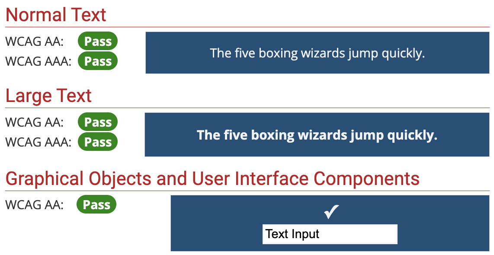
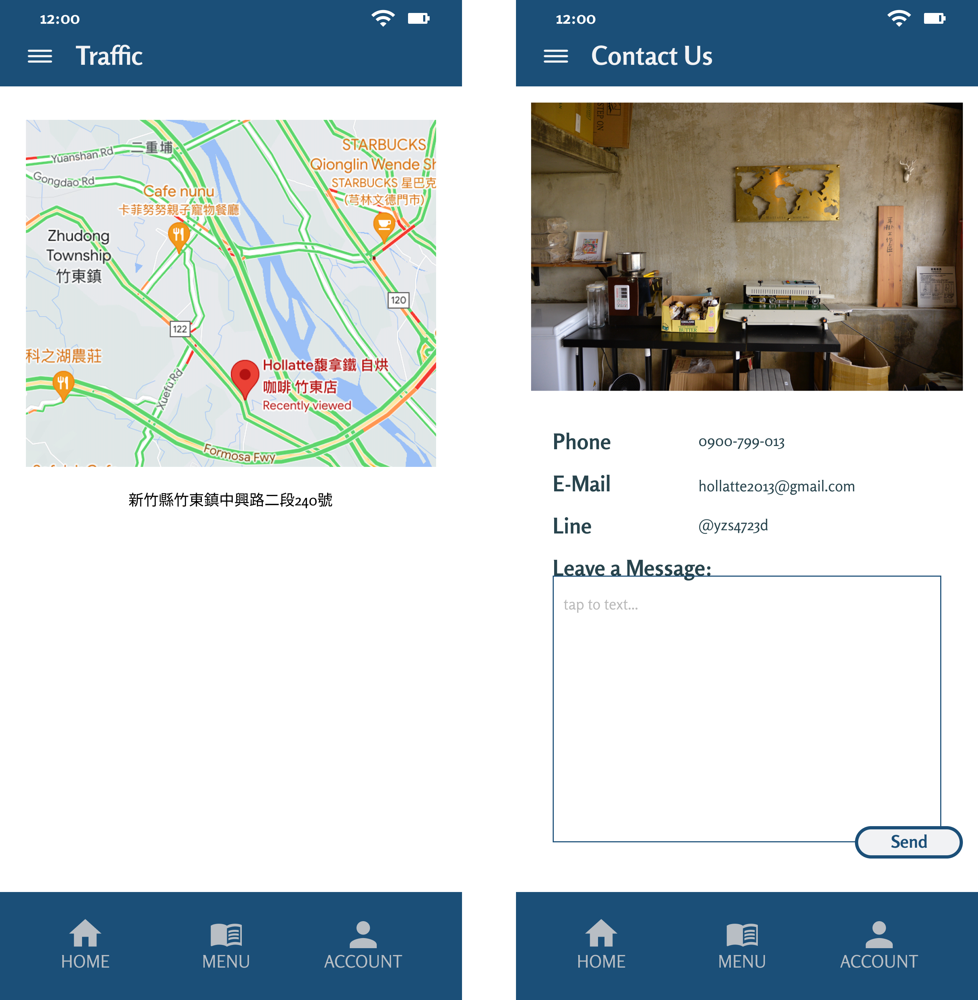

Case Study
Hollatte
Overview
Hollatte, nestled in a secluded alley, beckons with its allure of unique coffee blends, delectable light meals, and a serene ambiance. Beyond its delightful offerings, the allure of tranquility and limited seating further captivates customers, making it a cherished haven for coffee enthusiasts and seekers of quiet retreats alike.
As part of a project for the Google UX Design certificate, the task involves crafting an intuitive and engaging app for Hollatte Coffee. This app aims to seamlessly bridge the gap between customers and their coffee cravings by offering a convenient platform for ordering favorite beverages and meals, reserving tables in advance, and staying updated about the cafe's ambiance and available seating.
Project Duration
July 2023 to October 2023
The Problem
Busy professionals, accustomed to tight schedules and demanding workloads, often find themselves pressed for time during their coffee breaks. Without clear information about meal pickup times at cafes like Hollatte, these individuals risk delays and interruptions to their daily routines, impacting productivity and causing frustration.
In a bustling cityscape, customers seek solace in havens like Hollatte, craving not just exceptional coffee but also a serene environment to unwind. However, without prior knowledge of the cafe's ambiance and seat availability, their quest for tranquility can turn into a gamble, potentially leading to disappointment and a missed opportunity for relaxation.
The Goal
The goal is to create a user-friendly app for Hollatte that integrates ordering, reservation, and store information functions, empowering customers to enjoy a convenient and personalized coffee experience. It aims to streamline the process of ordering beverages and meals, facilitating quick and hassle-free transactions for users on the go. Additionally, the app will enable users to reserve tables in advance, ensuring they have a comfortable and welcoming space upon arrival. Furthermore, the app will provide comprehensive store information, including details about the cafe's ambiance, seating availability, and amenities, allowing users to make informed decisions and plan their visits effectively. Ultimately, the goal is to create an intuitive and engaging app that enhances the overall Hollatte experience, catering to the diverse needs and preferences of its customers.
My Role
As a UX designer, I designed an app for Hollatte from conception to delivery.
Responsibilities
As a UX designer for the Hollatte app project, my responsibilities include conducting user interviews to gather insights, paper and digital wireframing to visualize concepts, and creating low and high-fidelity prototypes for testing and refinement. I will also conduct usability studies to gather feedback, ensure accessibility in design considerations, and iterate on designs based on user feedback and testing results.
Understanding the User
User Research
Summary
From interviews, two primary user groups emerged: busy office workers and students who frequent cafes. Users expressed a desire for an immersive experience, even from a distance, including visualizing the cafe environment and knowing its amenities like power sockets. To address these needs, the app will incorporate store photos and detailed meal descriptions, along with clear traffic guidance. These insights will inform the development of a user-centered app.
Pain Points
- Time Inefficiency: Users face delays during peak hours, impacting their ability to quickly order and enjoy their meals.
- Seat Scarcity: Customers often encounter challenges finding available seating, leading to frustration and inconvenience.
- Limited Access to Amenities: Patrons desire easy access to information about cafe amenities such as Wi-Fi and power outlets, enhancing their overall experience.
Persona and User Journey Map
Based on the user research findings, I created two personas: "Caring Mommy Minnie" and "Studious Jay." These personas represented key customer segments with distinct needs and behaviors.
Additionally, I developed user journey maps to visualize the typical customer journey at Hollatte, from discovering the coffee shop to placing an order and enjoying their coffee.
Persona Minerva
User Story
As a caring single mother who frequently treats her colleagues to coffee and dessert, I seek an efficient order pickup system and nutritious food options. This way, I can return to work promptly and enjoy meals worry-free with my child.
Problem Statement
Minerva is a compassionate and health-conscious doctor who requires a swift and efficient method to order coffee and food to keep up with the fast pace of the hospital environment.

Persona Jay
User Story
As a customer who values a serene environment for work and study, I seek the ability to preview seating arrangements and assess the available amenities in advance. This way, I can ensure a distraction-free experience and avoid disruptions caused by connectivity issues or noise.
Problem Statement
Jay is a diligent student who seeks a conducive environment to concentrate on his studies and work commitments, as he prepares for further academic endeavors.

Insights
- Efficiency is Key: Both Minerva and Jay value efficiency in their respective journeys. Minerva seeks a streamlined process for collecting and submitting group orders, while Jay prioritizes quickly finding a seat with necessary amenities like power outlets.
- Digital Solutions Enhance Experience: Both personas could benefit from digital solutions such as mobile ordering, real-time order updates, and Wi-Fi connectivity instructions. These enhancements would improve convenience and satisfaction for users like Minerva and Jay.
- Accuracy and Transparency Matter: Minerva's journey highlights the importance of menu accuracy and order transparency, while Jay's emphasizes the need for accurate seat availability and outlet information. Providing real-time updates and clear communication channels would address these concerns.
- Personalization Drives Engagement: Incorporating features like user reviews, personalized recommendations, and saving group orders for future use can enhance engagement and satisfaction for both Minerva and Jay.
Foundation for Design Decisions
- Mobile Ordering System: Implement a mobile ordering system that allows users to browse the menu, place orders, and track their status in real-time. This enhances efficiency for busy users like Minerva and Jay who need quick access to coffee and food.
- Interactive Seat Map: Develop an interactive seat map within the app that shows real-time availability of seats and amenities like power outlets. This helps users like Jay find an ideal spot for work or study without disruptions.
- Menu Accuracy and Visuals: Ensure menu accuracy and provide detailed descriptions along with images to assist users like Minerva in making informed choices. Visuals can also aid users with accessibility needs, improving their overall experience.
- Clear Communication Channels: Establish clear communication channels for users to contact the cafe, place orders, or inquire about reservations. This addresses the need for transparency and accurate information, enhancing trust and satisfaction.
- Personalized Recommendations: Implement personalized recommendation features based on user preferences and past orders. This adds a layer of customization to the app, enhancing engagement and loyalty among users.
- Order History and Favorites: Include features such as order history and favorites to allow users to easily reorder previous items or save their favorite combinations. This streamlines the ordering process for repeat customers like Minerva and Jay.
Starting the Design
Embarking on the design journey for Hollatte's app, I delve into crafting an intuitive and seamless user experience. Guided by extensive research insights and user personas, I am poised to translate these findings into actionable design decisions. Let's dive into the process of shaping an app that not only meets but exceeds the expectations of our diverse user base.
Wireframes
Paper Wireframes
For the home screen, I've created a captivating picture wall showcasing Hollatte's inviting atmosphere. Alongside, the "Today’s Special" section grabs attention with enticing offers, encouraging users to explore further.

Then I iterated through five design versions for each screen, consolidating ideas that align with my vision into a cohesive interface. I repeated these steps for each screen, ensuring a comprehensive and user-centered design approach.
Digital Wireframes
After sketching out the paper wireframes for each screen, I translated them into digital format, concentrating on capturing the structure and flow of the app's interface, without delving into specific UI design elements at this stage.
Low-Fidelity Prototype
Usability Study: Findings
I conducted two rounds of usability studies to evaluate the effectiveness of the design iterations. Participants were asked to perform tasks such as placing an order, checking pickup times, and navigating the menu. Findings from the initial study played a pivotal role in refining the wireframes and progressing to mockups. In the second study, conducted using a high-fidelity prototype, we gained further insights into areas requiring refinement within the mockups.
Round 1 Findings:
- Participants noted that the feedback upon completing an order lacked clarity, leading to confusion in the ordering process.
- The prominence of the Personal Account icon was deemed excessive, potentially distracting users from other critical features.
Round 2 Findings:
- Participants found the reservation function to be incomplete, indicating a need for further development and refinement.
- Users expressed confusion when encountering different pictures linking to the same page, highlighting a need for consistency in design elements and navigation cues.
Refining the Design
Using insights from the usability study, I refined the app's design to address usability issues and enhance the user experience. This involved making adjustments to navigation elements, optimizing the checkout flow, and improving visual hierarchy.
I also paid attention to accessibility considerations, ensuring the app was usable for all customers, regardless of their abilities.
Accessibility Considerations
-
Use contrast checker before deciding on the color palette to make sure the used colors are user-friendly.
 -
Provide traffic information and contact information for those in need.
 - The navigation menu offers links to anywhere, letting users to know where they are.
Mockups
After usability test, I added a clear message of order completion after confirming the items.
Since the main user flow is ordering, not personal account relevances, I redesign the tab bar with menu in the middle.
Key Mockups

High-Fidelity Prototype
Once the design was refined, I created high-fidelity mockups to visualize the app's look and feel. These mockups provided a detailed representation of the app's interface, including typography, colors, and imagery.
Going Forward
Takeaways
- Personal Growth: Engaging in this design project provided valuable opportunities for personal growth and skill development. Conducting user research, iterating on designs, and collaborating with others honed my abilities as a designer and problem solver.
- Creative Exploration: The project allowed me to explore my creativity and design capabilities in a practical context. Experimenting with different design concepts and iterating based on feedback fostered a deeper understanding of the design process.
- Learning Experience: Each step of the project served as a learning experience, from conducting usability studies to refining mockups. Embracing feedback and iterating on designs helped me gain insights into user preferences and design best practices.
- Future Endeavors: While this project may not have immediate plans for launch or implementation, the skills and insights gained will undoubtedly benefit future endeavors. Whether pursuing further projects or professional opportunities, the lessons learned from this experience will continue to inform and inspire my work as a designer.
Next Steps
- Continue Iterating: Although the project may not be implemented, I plan to continue iterating on the designs based on any new insights or feedback received. This ongoing refinement process will allow me to further enhance my skills and explore new design possibilities.
- Portfolio Development: Incorporating the completed project into my design portfolio will showcase my capabilities and the depth of my design process. I will ensure that the project is presented effectively, highlighting key insights and design decisions.
- Seek Feedback: I will actively seek feedback from peers, mentors, and other professionals in the design community to gain valuable insights and perspectives on my work. Incorporating diverse feedback will help me continue to grow and improve as a designer.
- Explore New Projects: While reflecting on this project's journey, I am eager to explore new design projects and challenges. Whether through personal initiatives or collaborative opportunities, I look forward to applying my skills and creativity to future endeavors.